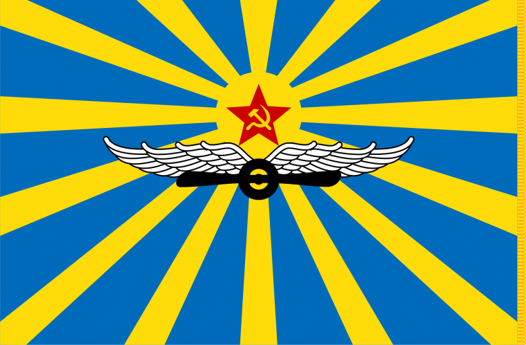

Виктор Васильевич Талалихин
Герой Советского Союза, советский военный летчик, заместитель командира эскадрильи 177-го истребительного авиационного полка ПВО 6-го истребительного авиационного корпуса ПВО, младший лейтенант.
7 августа 1941 года при отражении налета немецкой авиации на Москву он один из первых совершил таран в ночном воздушном бою. Самолет Талалихина упал в лес вблизи деревни Степыгино (ныне - городской округ Домодедово), а сам раненный летчик на парашюте спустился в речку Северку.
Мы - талалихинцы!
Наши цели и задачи: увековечивание памяти летчика, Героя Советского Союза Виктора Васильевича Талалихина, его семьи и летчиков, совершивших воздушные тараны в годы Великой Отечественной войны.
МПОО «Талалихинцы» создана в июне 2021 года. Одна из задач МПОО «Талалихинцы» – исследовательская деятельность, направленная на поиск материалов (архивных документов, публикаций и др.), родных и близких героев-лётчиков, а также на создание творческих проектов, раскрывающих неизвестные страницы истории Великой Отечественной войны.

Командир поискового отряда "Обелиск", ревизор МПОО "Талалихинцы"
С начала талалихинского движения в нем активно участвовали Тимофеева Надежда Ивановна, Попова Галина Петровна, Проскурин Юрий Николаевич, Печеневский Владимир Александрович, Земсков Алексей Николаевич, Лисин Александр Иванович; с 2014 года Поляков Михаил Михайлович, Михайлов Михаил Владимирович и другие активисты организации.
А вместе с сердцем - пламенный мотор!

Мы организовываем межрегиональные слёты талалихинцев (их уже 10), провели три Съезда, четыре межрегиональные конференции по увековечению памяти летчиков-талалихинцев.
Известно, что в годы Великой Отечественной войны советскими лётчиками было совершено 622 воздушных тарана. За свой подвиг большинство были удостоены высоких званий и правительственных наград. Как выяснилось, есть и такие, кто не был награждён.
С ноября 2021 по настоящее время МПОО «Талалихинцы» была проведена большая работа по изучению подвигов, биографий ненаграждённых летчиков. Сначала их было 35 человек. Постепенно их число увеличилось. В рамках объявленного нами межрегионального конкурса исследовательских работ "Забытая страница подвига" выявляются новые имена неувековеченных за свой подвиг-воздушный таран лётчиков. Семьи 32 летчиков наша Организация уже нашла. 25 семей приезжали на конференции из разных городов. Следующая конференция будет носить международный статус, так как в ней примут участие представители Приднестровской Молдавской Республики, Республики Беларусь.
Чтобы восстановить историческую справедливость, наша организация учредила общественную награду – памятный знак «Летчик-талалихинец», который был вручен родственникам героев во время проведения данной Конференции. Частица металла самолета И-16 Виктора Талалихина, поднятого в 2014 году с участием членов нашей Организации, впаяна в каждый памятный знак.